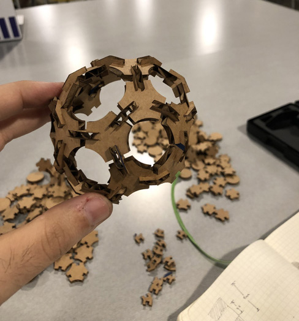

This week's assignment was to use a parametric approach to designing a press-fit kit.
As I started using Rhinoceros (and Grasshopper), I realized there would be a bit of maths involved:

The first thing I did was to re-create the basic components that I created in Illustrator for the last assignment and add some basic parameters for adjustment.
This was the non-parametrized re-creation of the main piece of the kit:
After adding some parametrization for the component, I made the sides flexible:
The next step was to do the same parametrization for the triangle sizes:
After the single piece was done, I parametrized the creation of multiple pieces using a slider:
The more challenging part was to create the connector because of weird angles, and being able to understand how to mirror, rotate, and define a union of geometries:

…and eventually I landed on this:

With this model ready, it is time to bake and…

The initial cutting was a major pain -- the proportions were off, and the notches were incredibly loose.

Then I created a pattern to easily cut the pieces:

After an initial run, I realized the pieces were too small to comfortably handle, so I decided to make them a tad bigger (while maintaining the same width for the incisions to assemble them.

I then cut connecting pieces… twice because the initial batch was too small and the larger pieces clashed on each other.

Unfortunately, over a third of the connectors fell through the laser cutter bed -- note to self: embiggen everything! The ones that made it, worked quite well:

And eventually, I got to this:

After I completed this shape, I realized that real 2V geodesic domes have two sizes of pieces, and not just one. In general, I'm satisfied with the outcome of my ingenuous approach, but now realize the value of doing previous research in order to optimize the time spent designing pieces.
Here is a link to the .AI file that contains the pattern and pieces.